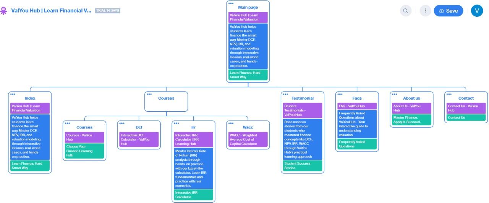

VALYOU HUB
Purpose & Guiding Principle
ValYou Hub was built around one clear idea: make valuation easy to learn and actually useful.
We don’t treat it like a boring academic subject. Instead, we teach it as a real skill you can learn, practice, and apply in real life.
Everything on the site, the design, the tone, the way pages flow is designed with simplicity, because we felt just populating complex stuff, saying too much jargon just to emphasise that the topics are complex is not something that a person learning finance for the first time appreciates.
We think of the site as a guided journey. First, we make it easy for you to start. Then, as you explore, we show you proof that we’re credible, give you structure, and offer hands-on practice.
The way we’ve arranged content and visuals follows how people naturally read, focus, and learn — so it feels smooth instead of overwhelming.
Visual Language & Color Choices — Why Blue and White
- Blue = Trust and Professionalism
In finance, blue gives a feeling of stability, reliability, and competence. People naturally link blue with trusted institutions like banks and fintech companies — which is important when we’re teaching topics that require trust.
- White = Clarity and Openness
White space keeps things clean, makes text easier to read, and helps you focus on what matters. It also keeps the page from feeling cluttered.
- Motion, Used Carefully
Small, smooth animations (like fade-ins or gentle scrolling effects) make the site feel modern and engaging — but never distracting. We also respect reduced-motion preferences for users who prefer a calmer experience.
STRUCTURE
Home Page
The homepage is made to tell our story in the first few seconds. The moment you arrive, you see a strong image — a person looking at financial charts — with our tagline: “Learn Finance, not the hard way, but the smart way.” It sets the tone right away.
If you’re ready to jump in, the Start Learning button is right at the top. On the far right, you’ll see our CFA Institute accreditation badge, which builds trust for anyone serious about finance. This mix of action and trust means whether you’re in a rush or just checking us out, you’ll feel comfortable staying.
If you want to look around first, the navigation bar and sections on the page guide you smoothly through what we offer. We also highlight our main topics (DCF, IRR, WACC), show testimonials which include student success stories.
To make it fun and interactive, we’ve added challenges like the Decision Demo for NPV. If you get the answer wrong, we show you why the course can help. If you get it right, you still learn something new. Either way, you leave with more knowledge than you started with.
Navigation Bar
- Home – The starting point. No matter where you come from — Google, social media, or an ad — this is where you get the full picture of what we offer.
- Courses – Direct access to all our course topics.
- Testimonials – Real stories from past students.
- FAQs – Answers to common questions so you don’t have to wait or guess.
- About Us – Who we are, what we do, and why we started.
- Contact Us – Reach us through email, phone, WhatsApp, or social media. We have also added query form , so that person can raise query then and there,also there is google maps intgration to reach the regitered office, againa sign of credibility(organisation with regiteredx` office)
- Start Learning – A clear call-to-action that takes you straight to the course page.
- Font Size Tool – Lets you increase text size for better readability, especially helpful for older users or anyone with vision difficulties.
Courses Page
We offer four main topics: DCF & NPV (together, since they’re closely related), IRR, WACC, and P/E Ratio(which is under developement). Each course is designed to take you from curious to confident, with a clear flow that stays the same for all topics.
Design of Course Structures
- The Hook – Fun Scenarios
We start with something simple but thought-provoking — like our “Time Traveler’s ₹100” question: would you take ₹100 now or in three years? It feels easy, but it introduces the idea that money changes value over time.
- Why It Matters
Next, we explain the real-world reasons behind it — like inflation, opportunity cost, and how these affect investment and business choices.
- Step-by-Step Guides
Each topic includes a clear “recipe” for solving problems. For NPV, it’s:
- Find the cash flows
- Choose the discount rate
- Apply discounting
- Add up the present values
- Understand the result
Such things enables users to learn it step by step, maybe it seems really easy to somenbody who is already into finance, but for a new commer, why the denominator is like that, how to proceed further, such steps matter more, hence it is displayed there
- Choose Your Level
You can pick Basic, Intermediate, or Advanced problems depending on your skill level.Also as the user practice moe, it enables confidence inside him/her, and reinforces that he/she is able to learn the concept, the user would proably stick with us only
- Practice in Excel
Most other webistes, just have videos explainig the content, and expects user to practice them in his/her own excel sheet. Here 2 things arise-
User has to type in all values in excel by himself/herself, which is time consuming and boring
- At some point of time it becomes boring
- The user have to take the vide and excel in split screen or switch between windows constantly, something which is a problem
You get pre-made Excel sheets so you can focus on the process, not the formatting. Hints are built in, and you can check your work instantly.
This will help in uer retnetion and acts as on of the major diffrentiator for us, as we are not just teaching the concept, but also how to apply it in excel, which is a must have skill in finance, and we are teaching it from the very first day.
- Checking answers & Step by Step Solution
Even if things dont go right or the answer is incorrect due to silly mistake, this will guide you through
This approach works the same for DCF & NPV, IRR, WACC, and the upcoming P/E Ratio, so you always know what to expect but still get something fresh each time.
Testimonial Page
Why We Made It
We built the Student Success Stories page to show how ValYou Hub has made a real difference in people’s careers and learning journeys.
It’s one thing for us to say our courses work , but it’s much stronger when you hear it from real people who’ve been there. The testimonials are there with people from reputable colleges,working finance professionals , which builds further trust in user.
How the Page Flows
- Intro & Ratings – A short intro at the top, plus our average rating (9.0/10) with stars so visitors quickly see our credibility.
- Individual Stories – Every testimonial follows the same simple format:
- Name & Current Role – So you know who they are and what they do.
- Rating & Personal Experience – They share what challenges they faced, how ValYou Hub helped, and what they achieved.
- Skills Learned – Listed as small tags (like DCF, WACC, Excel Modeling) so you instantly see the takeaways.
- Call to Action – Ends with an invite to join and start learning.
Why It Works
- Builds Trust – Shows proof our platform works.
- Shows Our Impact – Stories come from people at all stages of their careers, from students to VPs.
- Highlights Real Results – Skills gained, promotions earned, top grades achieved — all real.
- Inspires Others – When people see others succeed, they want to succeed too.
FAQ Page
Why We Made It
The FAQ page is here to make life easier for new visitors.
When someone first finds ValYou Hub, they usually have a few important questions — about what we do, who it’s for, how it works, and if it’s worth their time. Instead of making them search for answers or leave the site, we give them everything in one place.
The goal? Remove doubt, save time, and help learners feel ready to start right away.
How the Page is Set Up
- Intro Line – A short welcome letting visitors know they’ll find the answers they need here.
- Simple Question List – Short, clear, and easy to scan. Topics include:
- What ValYou Hub is
- Who it’s for
- How we’re different from other platforms
- If you need prior knowledge
- Whether it’s self-paced
- How to test yourself
- Managing expectations (“Will I become an expert overnight?”)
- Free access details
- How skills apply in real life
- Contact Prompt – If their question isn’t listed, they can easily reach us through the contact page.
- Key Highlights – Quick facts like 100% Free Access and 24/7 Availability so the benefits are instantly clear.
About Us Page
This page is our story and promise to learners.
It opens with our vision — Master Finance, Apply it, and Succeed — plus a Start Learning Now button so visitors can take action right away.
We explain our mission, our hands-on Excel-based learning style, and our simple step-by-step approach: Learn → Practice → Apply.
We also introduce our team, because knowing who’s teaching builds trust. The page ends with a Join Us Today call-to-action linking directly to the courses page so the journey feels natural.
Contact Us Page
We designed this page for both accessibility and trust.
It offers multiple ways to reach us — our physical address (with Google Maps), dedicated email IDs for specific needs (Admissions, Support, Partnerships, Media, Billing), and a secure contact form where users can even upload files.
We use the POST method for security, so personal data stays private. At the bottom, we include our social media links and a subscription option to help people stay connected.
Accessibility Choices
Accessibility is a big priority for us.
We have a font size adjustment tool (increase, decrease, reset) so everyone — including people with vision challenges — can read comfortably. Our site works with screen readers, and we’ve structured our HTML so reading flows smoothly without awkward breaks that could confuse assistive tools.
Footer Structure
- About ValYou Hub – A short and engaging snapshot of who we are and what we stand for.
- Quick Links – Same as the top navigation, so you can jump anywhere without scrolling back:
- Home
- Courses
- Testimonials
- FAQs
- About Us
- Contact Us
- Start Learning
- Contact Us – Email, address with Google Map, and phone number.
- Follow Us – Social media icons with links to stay connected.
- Bottom Fine Print – © 2025 ValYou Hub. All Rights Reserved.
Site Map
Below is the visual site map of ValYou Hub.
